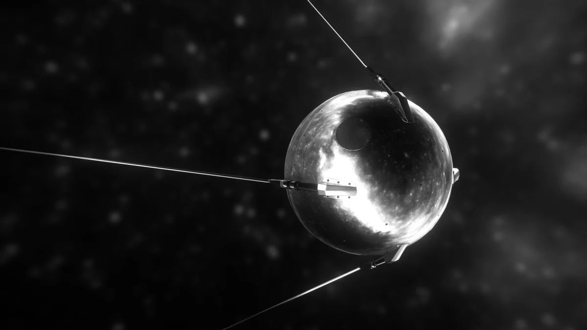
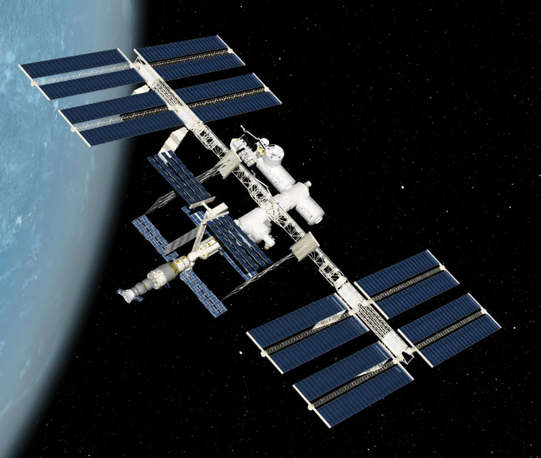

Околоземные объекты
 Искусственный спутник Земли (ИСЗ) — космический летательный аппарат, вращающийся вокруг Земли по геоцентрической орбите. Для движения по орбите вокруг Земли аппарат должен иметь начальную скорость, равную или большую первой космической скорости. Полёты выполняются на высотах до нескольких сотен тысяч километров. Нижнюю границу высоты полёта обуславливает необходимость избегания процесса быстрого торможения в атмосфере. Период обращения спутника по орбите в зависимости от средней высоты полёта может составлять от полутора часов до нескольких лет. Особое значение имеют спутники на геостационарной орбите, период обращения которых строго равен суткам и поэтому для наземного наблюдателя они неподвижно «висят» на небосклоне, что позволяет избавиться от поворотных устройств в антеннах. В начале космической эры спутники запускались только посредством ракет-носителей, а к концу XX века широкое распространение получил также запуск спутников с борта других спутников — орбитальных станций и космических кораблей (в первую очередь, с Спейс Шаттл).
Искуственные спутники выполняют великое множество задач, от связи и системы геопозиционирования до наблюдения за Землёй и её окружающей средой. Сейчас на орбите Земли летает более пяти тысяч спутников, половина из них не функционирует и постепенно падает в атмосферу и сгорает в ней же. Рассмотрим некоторые летательные аппараты
Международная Косимческая станция
Международная космическая станция, сокр. МКС — пилотируемая орбитальная станция, используемая как многоцелевой космический исследовательский комплекс. Строение станции МКС В каждом из 14 модулей находятся исследовательские лаборатории, хозяйственные помещения, склады, спальные места, тренажеры. Наружная обшивка космической станции оснащена солнечными батареями. Основная цель создания МКС – возможность проведения на околоземной орбите экспериментов, требующих наличия уникальных условий космического полёта. МКС используется для проведения фундаментальных и прикладных исследований в области медицины и биологии, физики, астрономии, физики космических лучей, геофизики и дистанционного зондирования Земли, материаловедения, космической техники и технологии, космического образования и др. Работы проводятся с помощью специального оборудования, эксплуатируемого, как правило, в герметичных отсеках специализированных модулей-лабораторий; часть оборудования для экспериментов, связанных с решением задач мониторинга окружающей среды, астрономических и геофизических измерений, наблюдений Земли в автоматическом режиме, длительного экспонирования в условиях открытого космоса размещена на внешней поверхности модулей МКС. В основу использования научной аппаратуры заложен принцип её сменности (периодической замены доставляемого оборудования на универсальных рабочих местах, обеспечивающих его функционирование необходимыми ресурсами)
Ниже представлена схема модулей космической станции:
Ближайшее рассмотрение
Предлагаю вашему вниманию 3D-модель МКС, созданную NASA. Для загрузки нажмите на кнопку
Телескоп Джеймса Уэбба
 Космический телескоп Джеймса Уэбба - ведущая в мире обсерватория
космической науки. Уэбб разгадает тайны нашей солнечной системы,
заглянет за ее пределы, в далекие миры вокруг других звезд, и
исследует таинственные структуры и происхождение нашей Вселенной и
нашего места в ней. Уэбб - это международная программа,
возглавляемая НАСА и его партнерами. Публикация первых изображений и
спектров Уэбба открывает начало научной деятельности Уэбба, где
астрономы по всему миру получат возможность наблюдать все, что
угодно, от объектов в пределах нашей солнечной системы до ранней
Вселенной, используя четыре прибора Уэбба.
Космический телескоп Джеймса Уэбба - ведущая в мире обсерватория
космической науки. Уэбб разгадает тайны нашей солнечной системы,
заглянет за ее пределы, в далекие миры вокруг других звезд, и
исследует таинственные структуры и происхождение нашей Вселенной и
нашего места в ней. Уэбб - это международная программа,
возглавляемая НАСА и его партнерами. Публикация первых изображений и
спектров Уэбба открывает начало научной деятельности Уэбба, где
астрономы по всему миру получат возможность наблюдать все, что
угодно, от объектов в пределах нашей солнечной системы до ранней
Вселенной, используя четыре прибора Уэбба.
Так в чем же его уникальноть?
Во-первых, он складной. Его диаметр составляет 6,5 метров, а значит, что его ровестник-оптический телескоп в текущих условиях сущестовать в космосе не может из-за веса в тысячи тонн. Однако специалисты NASA, потратив 35 лет на разработку, сотворили подобный телеском весом всего в 6,5 тонн.
Процесс разложения телескопа
Во-вторых, Уэбб является радиотелескопом, а значит он способен воспринимать информацию в гораздо более широком спектре. Например, ранее запущенный оптический Хаббл не имеет технической возсожности смотреть на объекты, сильно удаленные от нашей системы. Всему виной эффект Допплера. Всем известно, что свет, исходящий от объектов, движущихся от нас, сдвингается к красному. Вселенная расширяется со скоростью света, поэтому объекты, близкие к границе Вселенной, движутся от нас со скоростью, приближающейся к скорости света. В результате этого свет вовсе покидает видимый спектр и превращается в слабое ИК-излучение.
В-третьих, данный телескоп расположен в точке Лагранжа L2, а значит он может оставаться почти неподвижным в пространстве относительно Земли и Солнца, а также закрыт от прямых солнечных лучей.
Таким образом, Уэбб является передовым произведением инженерного искусства, которое позволит узучить то, что раньше не представлялось возможным.